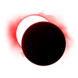
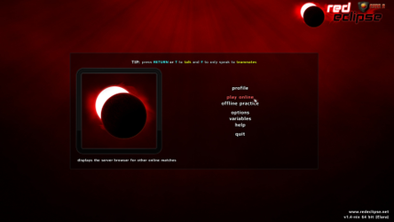
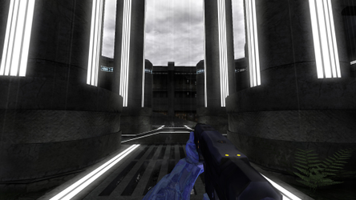
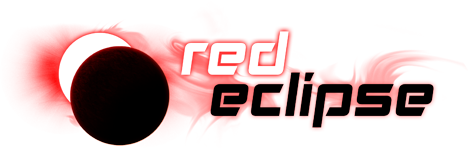

Red Eclipse
Dieser Artikel wurde für die folgenden Ubuntu-Versionen getestet:
Ubuntu 16.04 Xenial Xerus
Zum Verständnis dieses Artikels sind folgende Seiten hilfreich:

Red Eclipse  ist ein First-Person-Shooter, der auf die Cube Engine 2 setzt und der Spielereihe Unreal Tournament ähnelt. Es gibt eine Auswahl an verschiedenen Karten, welche unter anderem in Industrieanlagen oder auf fremden Planeten angesiedelt sind. Als Waffen stehen in den unterschiedlichen und abwechslungsreichen Spielmodi Pistolen, Schwerter, Schrotflinten, Maschinenpistolen und Raketenwerfer zur Verfügung. Im Spiel gibt es keine Heiltränke oder Medipacks - der eigene Charakter regeneriert sich selbst. Das Spiel kann im Single-Player-Modus sowie im Multi-Player-Modus gespielt werden.
ist ein First-Person-Shooter, der auf die Cube Engine 2 setzt und der Spielereihe Unreal Tournament ähnelt. Es gibt eine Auswahl an verschiedenen Karten, welche unter anderem in Industrieanlagen oder auf fremden Planeten angesiedelt sind. Als Waffen stehen in den unterschiedlichen und abwechslungsreichen Spielmodi Pistolen, Schwerter, Schrotflinten, Maschinenpistolen und Raketenwerfer zur Verfügung. Im Spiel gibt es keine Heiltränke oder Medipacks - der eigene Charakter regeneriert sich selbst. Das Spiel kann im Single-Player-Modus sowie im Multi-Player-Modus gespielt werden.
|  |  |
| Menü | Spielszene |
Installation¶
Aus den offiziellen Paketquellen¶
Red Eclipse kann (in Ubuntu 16.04 Xenial) aus den Paketquellen über folgendes Paket installiert werden:
redeclipse (multiverse)
 mit apturl
mit apturl
Paketliste zum Kopieren:
sudo apt-get install redeclipse
sudo aptitude install redeclipse
Die Version in den Paketquellen ist ggf. etwas veraltet aber funktionsfähig. Einige Online-Server benutzen ein neueres Protokoll, so dass mit dieser Version nicht auf jedem Server gespielt werden kann.
Projektseite¶
Eine Archivdatei kann von der Projektseite  heruntergeladen werden. Dieses anschließend entpacken [2] und das Spiel über
heruntergeladen werden. Dieses anschließend entpacken [2] und das Spiel über redeclipse.sh starten [3]. Auf Wunsch einen Menüeintrag [4] vornehmen.
Nach dem ersten Start wird im Homeverzeichnis der versteckte Ordner ~/.redeclipse angelegt.
Server¶
Die Konfigurationsdatei servinit.cfg ist je nach Installationsart unter /usr/share/doc/redeclipse/examples/ oder im Installationsordner unter doc/examples zu finden.
Es kann ein eigener Server aufgesetzt werden - hierzu die Projektseite und die Datei serverinit.cfg konsultieren.
Tastenkürzel¶
| Tastenkürzel | |
| Taste(n) | Funktion |
 | Steuerung / Dodge durch mehrfaches drücken der Tasten |
| Sprung / Multijump durch mehrmaliges betätigen der Taste | |
| +
| |
 / /  | Angriff / Sekundäre Funktion nutzen. |
 (Mausrad) /
1 -
4 (Mausrad) /
1 -
4 | Waffenwechsel |
| R | Nachladen |
| G | Handgranate |
| E | Gegenstände aufnehmen / benutzen |
| F | Ball / Flagge werfen (Bomber Ball Modus) |
| Strg | Gehen |
| ⇧ | Ducken |
| Esc | Menü |
Eine komplette Übersicht ist unter Gameplay Controls und Editing Controls zu ersehen. Unter "Options -> Key" können die Grundeinstellungen angepasst werden.

Infobox¶
| Red Eclipse | |
| Genre: | Ego-Shooter |
| Sprache: | |
| Veröffentlichung: | 2011+ |
| Entwickler: | siehe Projektseite |
| Systemvoraussetzungen: | - |
| Medien: | Download |
| Strichcode / EAN / GTIN: | - |
| Läuft mit: | nativ |

- Erstellt mit Inyoka
-
 2004 – 2017 ubuntuusers.de • Einige Rechte vorbehalten
2004 – 2017 ubuntuusers.de • Einige Rechte vorbehalten
Lizenz • Kontakt • Datenschutz • Impressum • Serverstatus -
Serverhousing gespendet von